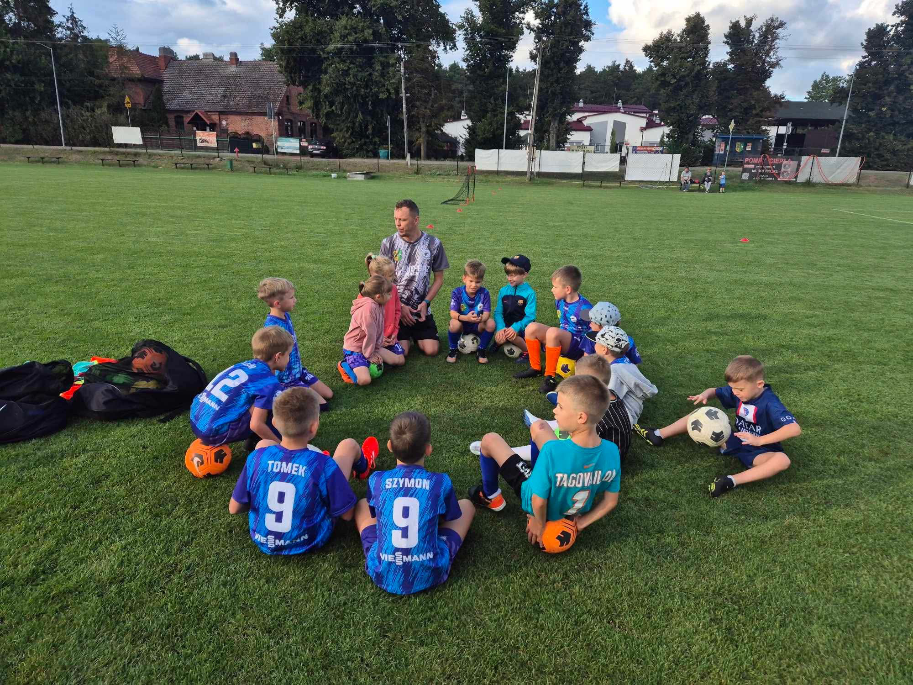
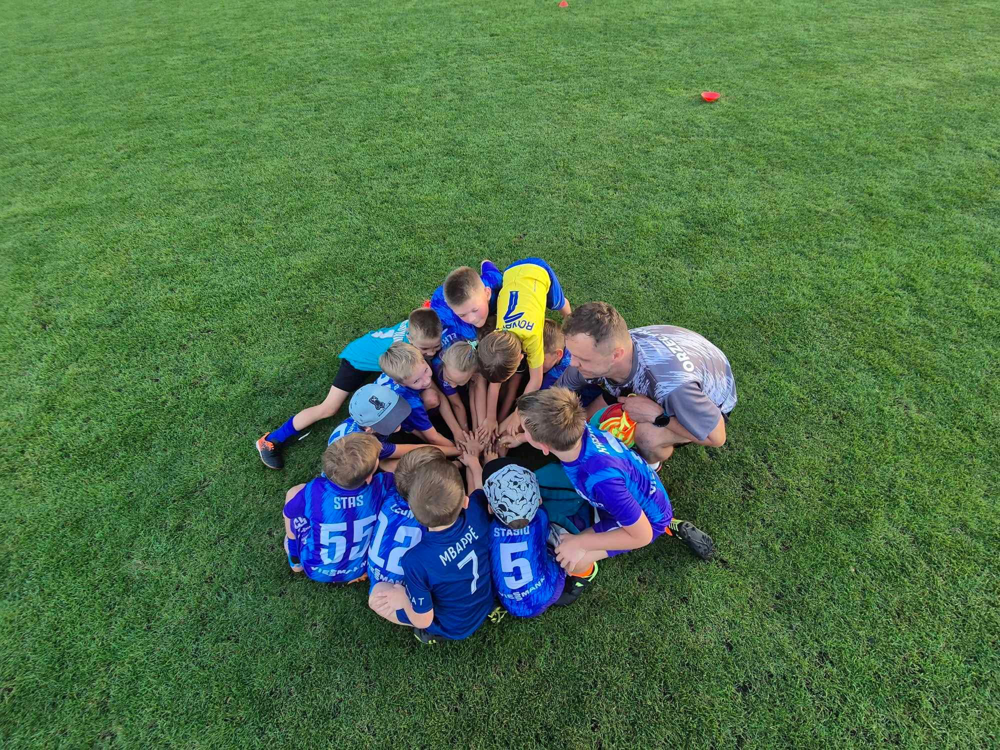

Małe Orły
Nasza Akademia Piłkarska to miejsce, gdzie najmłodsi adepci futbolu mogą rozpocząć swoją przygodę ze sportem pod okiem doświadczonego trenera. Treningi prowadzi Paweł Tomaszewski – autorytet dla naszych maluchów, który zwraca szczególną uwagę na detale oraz jakość ćwiczeń. Dzięki jego zaangażowaniu młodzi zawodnicy rozwijają się nie tylko pod względem piłkarskim, ale również uczą się współpracy, dyscypliny i szacunku do sportu.
Zajęcia opierają się na nowoczesnym podejściu, bez presji na wynik. Trener kładzie nacisk na ogólny rozwój psycho-fizyczny dzieci, dbając o ich koordynację, wytrzymałość i współpracę zespołową. Dzięki zabawie i pozytywnej atmosferze młodzi piłkarze rozwijają technikę, koncentrację oraz kreatywność. To treningi, które uczą samodyscypliny i miłości do sportu, budując pewność siebie u każdego dziecka.
Dołącz do nas!
Na obecną chwilę mamy pełny skład. Jeżeli jesteście zainteresowani, aby dołączyć prosimy o kontakt. Dopiszemy Was do listy rezerwowej i wkrótce znajdzie się dla Was miejsce.
W zależności od zainteresowania i dostępności infrastruktury będziemy uruchamiać kolejne grupy.
W każdej sprawie piszcie na adres: orzelprzyleki@gmail.com
